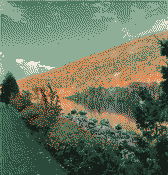
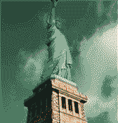
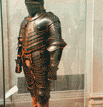

Workday Jobs Scraper
Apify actor that scrapes any public Workday careers site, past the 2,000-result cap.
// portfolio + trip journals
One-line tagline goes here.PLACEHOLDER
currently: somewhere above treeline [placeholder]
01 / who I am
Placeholder paragraph about who Cody is, what he cares about, and how he works. Short, plain, a little wry.PLACEHOLDER
Placeholder paragraph about the outdoors: slow miles, early starts, and why the trail is where the good ideas show up.PLACEHOLDER
02 / things I've built
Apify actor that scrapes any public Workday careers site, past the 2,000-result cap.
Apify actor that tracks how often brands appear in ChatGPT, Perplexity, Gemini and Claude answers.
Placeholder description of another project.
Placeholder description of another project.
03 / trip journals

Oct 3–10, 2026Acadia, October 2026-- mi · -- ftpublic
Oct 2026NYC, October 2026-- mi · -- ftpublic
Oct 2026The Met, armor hall-- mi · -- ftfriendsHover to tilt a notebook; click or press Enter to open it.Swipe the shelf, tap a notebook to open it.
04 / where I've been
Drag to turn the globe. Home base: Houston, TX, shown at city level only.